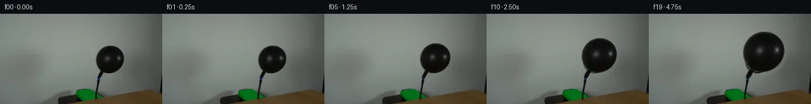
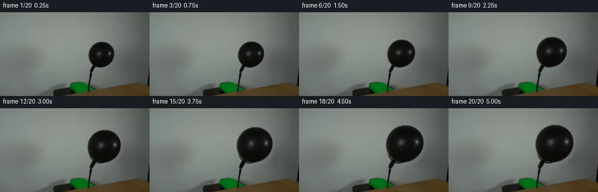
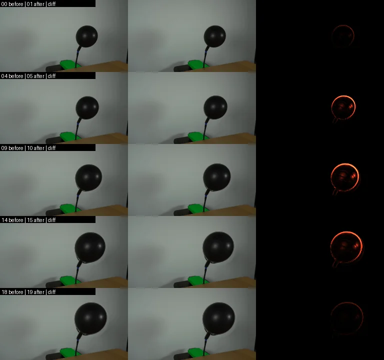

V0 · 初版即最终版
![]()
Observable Generation Trace
把最终像素视频、Harness 冻结的每轮候选、真实工具事件和 Agent 自述放在同一页。可观测证据与模型自述分开标记，避免把“模型说它检查过”误当成真实工具调用。
![首帧]()
Static locked-off single-shot with fixed frame throughout filmed with constant framerate in real-time. The scene shows a realistic scientific demonstration. The scene only contains the described setup and actions. The balloon is attached to a black hose that points upwards from behind a wooden table. Air is being pumped into the black balloon.
首帧显示在左侧播放器初始画面。Track 权限、隔离和 tensor 一致性来自 run manifest，而不是 METHOD.md。
上方并排显示初版和最终版，默认同步播放；下方每个版本可独立播放，也可勾选加入同步播放。仅检查图更新的连续重复快照已合并，回退旧视频仍保留为一次修订。
Observable events
来源：events.jsonl + run manifest
此 Track 禁止读取输出图片。逐轮预览由外部 Harness 自动冻结，只用于事后审计，生成 Agent 当时看不到这些页面。
Frozen candidates
每张图来自该 round 的真实 00 / 01 / 05 / 10 / 19 帧

pixels 278300e0662d07bf · code 4a52ea7e4dbc3618
--- previous/generate.py +++ current/generate.py @@ -0,0 +1,166 @@ +#!/usr/bin/env python3 +"""Generate a locked-off 20-frame continuation of the inflating balloon.""" + +from pathlib import Path + +import cv2 +import numpy as np +from PIL import Image, ImageDraw + +import artifact_io + + +ROOT = Path(__file__).resolve().parent +WIDTH, HEIGHT, COUNT = 256, 144, 20 + + +def source_balloon_alpha(source: np.ndarray) -> np.ndarray: + """Estimate an antialiased matte for the original black envelope only.""" + yy, xx = np.mgrid[:HEIGHT, :WIDTH].astype(np.float32) + + # A generous geometric gate prevents other dark objects from entering the + # matte. Pixel darkness supplies the precise photographed silhouette. + radial = np.sqrt(((xx - 173.4) / 23.7) ** 2 + ((yy - 73.5) / 23.9) ** 2) + ellipse_gate = np.clip((1.075 - radial) * 13.0, 0.0, 1.0) + + tail = np.zeros((HEIGHT, WIDTH), np.uint8) + cv2.fillPoly( + tail, + [np.array([[156, 86], [166, 88], [163, 96], [158, 101], [153, 100]], np.int32)], + 255, + ) + tail = cv2.GaussianBlur(tail, (5, 5), 0).astype(np.float32) / 255.0 + geometry = np.maximum(ellipse_gate, tail) + geometry[yy > 101.5] = 0.0 + + luminance = ( + source[..., 0].astype(np.float32) * 0.299 + + source[..., 1].astype(np.float32) * 0.587 + + source[..., 2].astype(np.float32) * 0.114 + ) + darkness = np.clip((126.0 - luminance) / 31.0, 0.0, 1.0) + alpha = geometry * darkness + alpha[alpha < 0.012] = 0.0 + return alpha.astype(np.float32) + + +def inflate(source: np.ndarray, alpha: np.ndarray, frame_index: int) -> np.ndarray: + if frame_index == 0: + return source.copy() + + u = frame_index / (COUNT - 1) + progress = u * u * (3.0 - 2.0 * u) # smooth pressure build and final easing + sx = 1.0 + 0.48 * progress + sy = 1.0 + 0.46 * progress + + # Scale about the hose/envelope junction. This carries the photographed + # shading and highlight with the rubber while holding the neck in place. + anchor_x, anchor_y = 157.0, 99.0 + matrix = np.array( + [[sx, 0.0, anchor_x * (1.0 - sx)], [0.0, sy, anchor_y * (1.0 - sy)]], + dtype=np.float32, + ) + + warped_alpha = cv2.warpAffine( + alpha, + matrix, + (WIDTH, HEIGHT), + flags=cv2.INTER_CUBIC, + borderMode=cv2.BORDER_CONSTANT, + borderValue=0, + ) + warped_alpha = np.clip(warped_alpha, 0.0, 1.0) + + # Premultiplied resampling avoids dark or bright fringes at the silhouette. + premultiplied = source.astype(np.float32) * alpha[..., None] + warped_premultiplied = cv2.warpAffine( + premultiplied, + matrix, + (WIDTH, HEIGHT), + flags=cv2.INTER_CUBIC, + borderMode=cv2.BORDER_CONSTANT, + borderValue=(0, 0, 0), + ) + foreground = np.zeros_like(warped_premultiplied) + valid = warped_alpha > 1e-4 + foreground[valid] = warped_premultiplied[valid] / warped_alpha[valid, None] + … diff truncated; 79 more lines …
Final visual checks
Harness 保存的最终产物


Agent claims
以下文字由生成 Agent 撰写，不等同于工具证据
(154, 134) through (235, 121) to (255, 128); the tabletop continues below it.(92, 134). A bright green pump body occupies roughly x=120..153, y=122..143, partly hidden by the tabletop.(151, 135) to (156, 102), leaning slightly right-to-left as it descends.x=151..195, y=51..96. Its center is about (173, 73), its brightest small specular highlight is around (185, 69), and its lower neck converges on the hose near (157, 102).The hose/nozzle attachment at about (156, 102) remains fixed. The balloon envelope grows about that anchor. Growth is smooth but not perfectly linear: it begins gently as pressure builds, is clearest in the middle, and eases slightly near the end. The original highlight is carried with the rubber surface and broadens subtly. A faint, slow lateral/upward compliance (sub-pixel to roughly one pixel) prevents the growth from looking mechanically rigid, but there is no camera motion and the table, pump, wall, and hose remain stationary.
| Frame | Time | Envelope scale / event |
|---|---|---|
| 00 | 0.00 s | Exact source frame; initial balloon about 44 x 45 px. |
| 01 | 0.25 s | Pressure onset; barely perceptible expansion. |
| 02 | 0.50 s | Smooth small expansion, neck still fixed. |
| 03 | 0.75 s | Balloon silhouette is visibly fuller. |
| 04 | 1.00 s | Continued inflation; highlight begins to broaden. |
| 05 | 1.25 s | Lower shoulder expands around the fixed neck. |
| 06 | 1.50 s | Envelope reaches roughly 1.16x initial width. |
| 07 | 1.75 s | Steady inflation, slight upward compliance. |
| 08 | 2.00 s | Roughly one-quarter of total planned area gain completed. |
| 09 | 2.25 s | Smooth mid-action growth. |
| 10 | 2.50 s | Balloon clearly larger; setup remains unchanged. |
| 11 | 2.75 s | Growth continues without popping or detachment. |
| 12 | 3.00 s | Upper envelope rounds outward. |
| 13 | 3.25 s | Roughly 1.34x initial width. |
| 14 | 3.50 s | Inflation begins to ease slightly. |
| 15 | 3.75 s | Full, taut shape with fixed lower neck. |
| 16 | 4.00 s | Smaller incremental growth than mid-shot. |
| 17 | 4.25 s | Near-final volume; subtle surface/highlight change. |
| 18 | 4.50 s | Final easing increment. |
| 19 | 4.75 s | Largest stable envelope, about 1.48x initial width and 1.46x initial height; no pop. |
The continuation is produced entirely with local deterministic pixel operations in generate.py.
first_frame.png is loaded as the immutable scene plate. Frame 00 is copied byte-for-byte at the RGB pixel level.(157, 99). Horizontal scale progresses from 1.0 to 1.48; vertical scale progresses from 1.0 to 1.46. A smoothstep timing curve models pressure building gently, stronger mid-shot inflation, and a slight final easing.artifact_io.save writes the RGB PNG sequence, packed uint32 tensor, inspection contact sheet, and standalone player. The generator also writes transition_check.png, showing selected before/after pairs and numerically amplified absolute pixel differences.Validation performed by the generator:
first_frame.png;pixels.npz (0xRRGGBB, shape 144 x 256 x 20, dtype uint32);